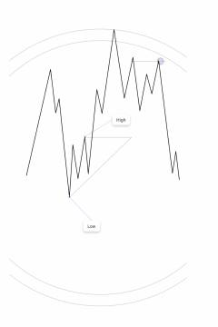

FCFibonacci doiralari va SNR darajalari yordamida bozor tahlili bo'yicha vizual qo'llanma.
Ushbu qo'llanma moliyaviy bozorlarda narxlar harakatini tahlil qilish uchun Fibonacci doiralari va qo'llab-quvvatlash hamda qarshilik (SNR) darajalaridan foydalanish usullarini tushuntiradi. Kitob grafik tahlil asosida bozor tendensiyalarini aniqlash va savdo qarorlarini qabul qilish bo'yicha vizual ko'rsatmalarni taqdim etadi.